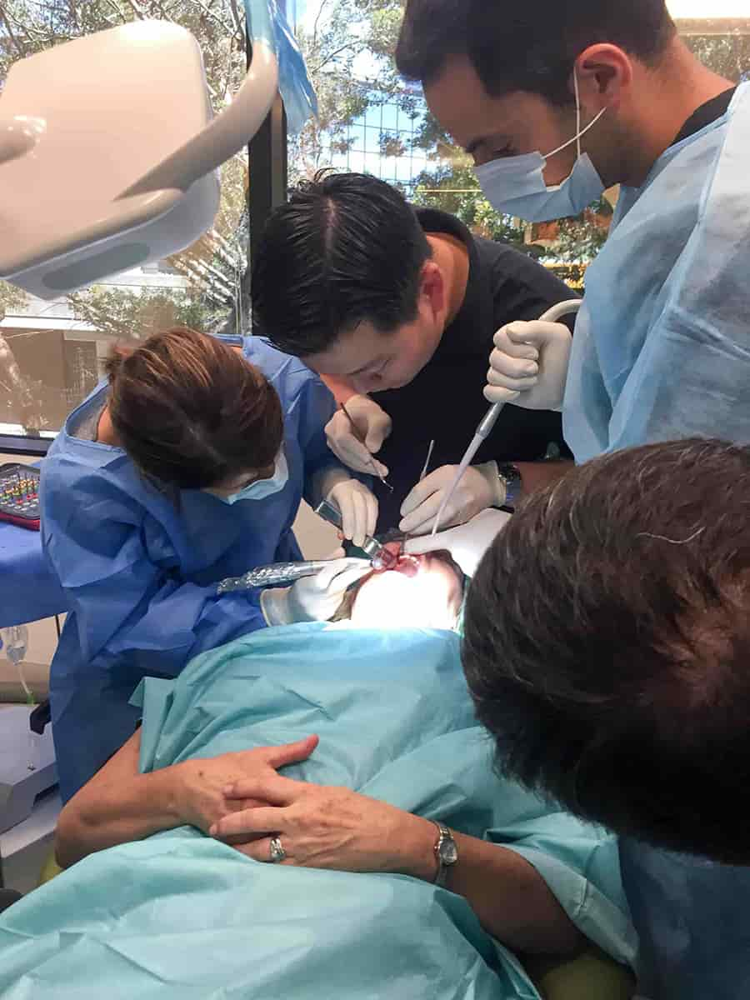
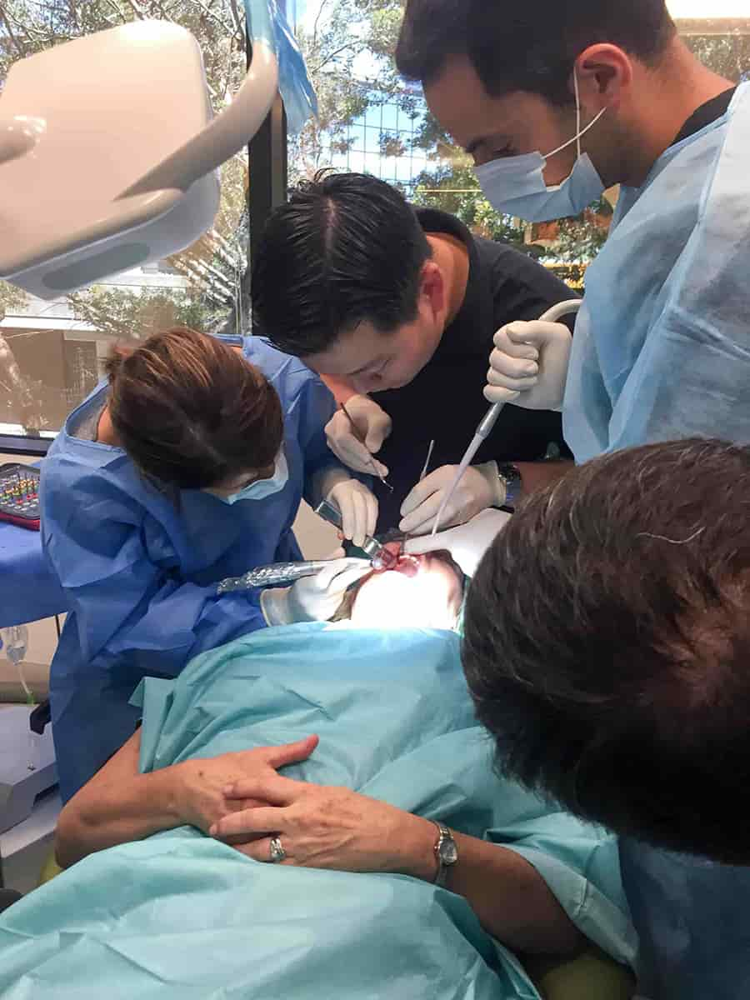
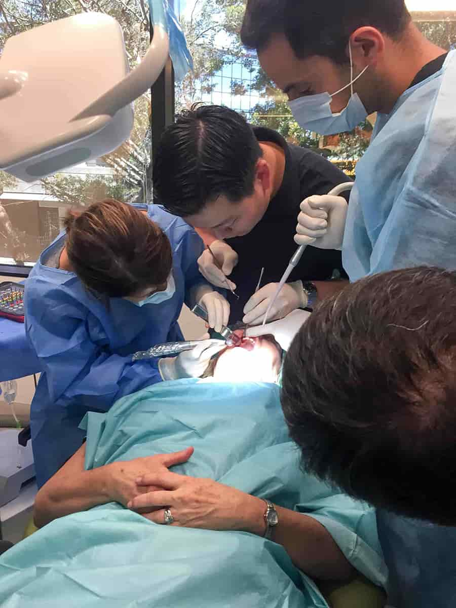

Registered dentists will perform two surgeries on your own patients with chair side instruction. Participants will learn both the surgical and restorative sides of implant dentistry and will get experience with comprehensive treatment planning and the latest imaging technology. This course is designed to benefit all skill levels and is the perfect opportunity to learn to incorporate implants into your dental practice.
2017: 7/24, 8/14, 8/28, 9/25
Course Outline

Registered dentists will assist the local community by helping perform cleanings, fillings, and extractions for special needs individuals. These patients are often not able to maintain proper oral hygiene and need extensive restorative work. Due to difficulties in treatment and insuring these patients, dental work is often neglected as well. This volunteer opportunity is a chance to give back and help those most in need.
2017: 8/29, 10/24
2018: 1/23, 3/13, 5/1, 6/26, 8/14, 10/23